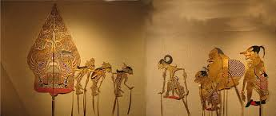
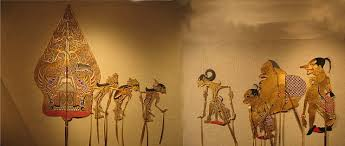

Wayang
Wayang is a traditional puppet theater art form from Indonesia, showcasing stories from Hindu epics like Ramayana and Mahabharata.

Wayang is a traditional puppet theater art form from Indonesia, showcasing stories from Hindu epics like Ramayana and Mahabharata.
